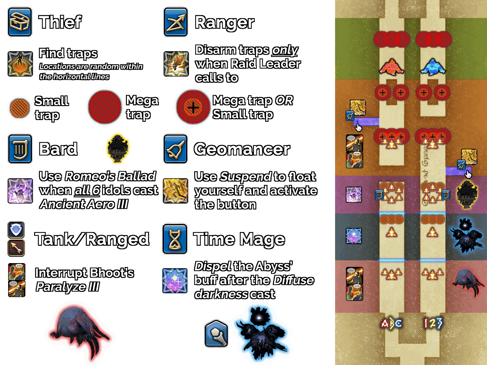
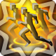

Pronged Passages
The bridge section between Dead Stars and Marble Dragon. Also referred to as “Bridges.”
Overview
After defeating Dead Stars, the raid splits into two groups: letter parties (A, B, C) take the left bridge, and number parties (1, 2, 3) take the right. Both sides navigate four zones filled with hidden traps and enemies before converging at the Marble Dragon arena.
Wild Charge fires in Zones 1, 2, and 4. It deals AoE damage with significantly increased damage to the player at the front. Always have a tank at the front and ensure everyone mitigates. A different tank must lead each subsequent Wild Charge as it applies Piercing Resistance Down. Wild Charge is taken on the two inner middle lines, so listen to your Raid Leader for positioning.

Zone 1
- Progression:
- Wild Charge: Tank in front, everyone mitigate.
- Interrupt casts from the Tower Bhoot (Paralyze III).
- DPS down the Aetherial Ward at the same pace as the other side.
Zone 2
- Progression:
- Wild Charge: Tank in front, everyone mitigate.
- Thieves move ahead to find the trap near the Aetherial Ward. Rangers defuse when safe and the Raid Leader calls for it.
- The Tower Abyss casts Diffuse Darkness, granting a buff. The Phantom Time Mage must Occult Dispel this before the second cast finishes.
- DPS down the Aetherial Ward at the same pace as the other side.
- Rangers can fish for traps on the far side while the Ward is being attacked.
Zone 3
- Passage 1:
- Thieves move ahead to find 2 traps near the Tower Idols. Rangers defuse when safe and called.
- Once all 6 Tower Idols have begun casting, the Phantom Bard uses
 Romeo's Ballad to stop them all.
Romeo's Ballad to stop them all. - The Geomancer on the right side uses

Suspend and presses the button on the blue walkway.
Once the Tower Idols are killed and the right-side button is pressed, a walkway opens for the left team; both sides progress together:
- Passage 2:
- Thieves move ahead to find 2 traps (1 large, 1 small) near the Tower Bhoot. Do not defuse these.
- Move enemies away from the traps and interrupt casts from the Tower Bhoot (Paralyze III).
- The Geomancer on the left side uses Suspend and presses the button on the blue walkway, dodging traps on the way.
- Thieves move ahead to find 2 traps (1 large, 1 small) on either side of the forked path.
- Rangers defuse only the small trap on both sides.
Zone 4: Progenitor & Progenitrix
- Boss Mechanics:
- Thieves move ahead to find the large trap (do not defuse). Tank leads Wild Charge in front.
- Close Call to Detonate (blue tether): Move bosses to outside edges of bridges to separate them.
- Far Cry to Detonate (green tether): Move bosses to inside edges to bring them close together.
- Bombshell Drop: Move the boss away from the tethered Lava Bombs while DPS destroy them. Keep the boss at the end of the bridge for the 1st set, then bring it back for the 2nd set.
Mechanics will now loop. A fire wall spawns from the south; dodge it. Repeating sequence:
- Sequence:
- Close Call or Far Cry to Detonate
- Stack Marker: everybody stack together on the wall
- Bombshell Drop
Phantom Job Responsibilities
- Communicate with your Ranger if they are going to blind-fish for traps.
- Where the paths split: standing in the middle right before the split reveals both the large and the small trap.
- Talk to your Thief if you want to blind-fish for traps.
- Stand at the outer side of your bridge.
- The AoE from Romeo's Ballad is massive, so do not stop the adds from the other bridge early.